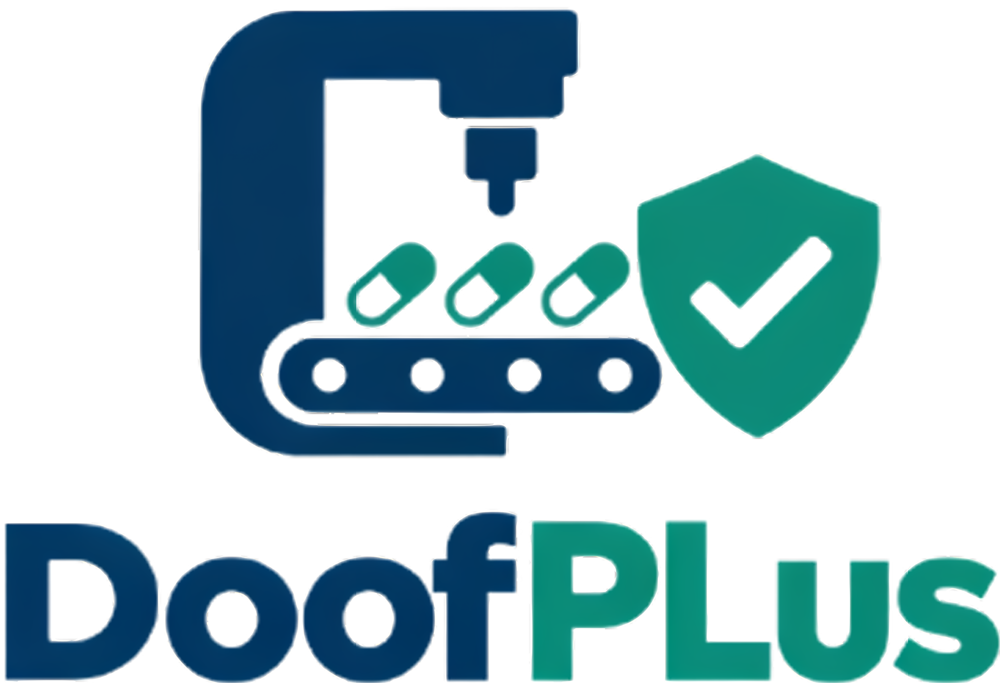

DoofPlus makes quality control easier.
Request a Demo →DoofPlus integrates directly with industrial equipment sensors —autoclaves, pH meters, pressure gauges— to capture critical variables automatically in real time, eliminating manual transcription and human error from your production records.
Create and manage the complete digital lifecycle of each pharmaceutical batch. Every variable, alert, and responsible party is linked to an immutable record, ready for regulatory review at any time without searching physical documents.
Our intelligent compliance engine continuously monitors all production parameters against your configured BPM ranges. When a critical deviation is detected, the system automatically triggers alerts and blocks the batch before it advances in the supply chain.
Generate immutable PDF traceability reports for each batch or production period with a single click. Present complete, tamper-proof evidence to DIGEMID inspectors in minutes instead of days, reducing audit preparation time by up to 80%.
Connect your industrial equipment —autoclaves, pH meters, thermometers, and pressure sensors— directly to DoofPlus. Telemetry is captured automatically in real time, completely eliminating the risk of manual transcription errors in critical process variables.
When a critical variable exceeds the configured BPM range, our compliance engine reacts instantly: it generates a visual alert for operators, notifies the Quality Assurance Manager, and automatically blocks the batch under investigation to prevent a defective product from advancing in the supply chain.
Every production batch is linked to a complete, tamper-proof digital record containing its full telemetry history, detected alerts, raw materials used, and the responsible QA manager's digital signature. This ensures Data Integrity compliance required by international regulatory agencies.
Generate immutable PDF reports of any batch or production period in seconds. Our traceability module consolidates telemetry data, compliance events, and responsible parties into a structured document ready for DIGEMID inspections, reducing audit preparation from days to minutes.
By automating the capture of critical variables (temperature, pressure, pH) directly from sensors, DoofPlus reduces manual transcription errors to virtually zero. Every record is exact, objective, and automatically timestamped.
Supervisors and QA managers can monitor the status of all connected equipment and active batches from any device, at any time. Automatic alerts ensure that deviations are detected and addressed in less than 5 seconds, before they compromise a batch.
Transform your regulatory inspections. With DoofPlus, all batch history, equipment logs, and compliance evidence are centralized and accessible instantly. Reduce audit preparation time by up to 80% and face inspectors with confidence and complete traceability.
Early detection of deviations through automated monitoring allows teams to intervene before a batch is definitively compromised. This translates to a significant reduction in product losses due to quality failures and costly regulatory non-compliance penalties.
At DoofPlus, we believe that pharmaceutical quality control deserves the same level of technological sophistication as the medicines it protects. We have built a SaaS platform that integrates IoT telemetry with regulatory management, eliminating manual records and providing laboratories with an intelligent, automated quality management system.
Our purpose is to be the digital shield of the pharmaceutical industry: protecting product integrity, ensuring regulatory compliance with DIGEMID, and enabling a new era of intelligent and transparent pharmaceutical manufacturing.
Software Engineer
Software Engineer
Software Engineer
Software Engineer
Software Engineer
Designed for private pharmaceutical laboratories of medium size seeking to digitize their quality assurance processes, eliminate manual records, and ensure BPM compliance with DIGEMID.
$199 /Per month
The comprehensive solution for large pharmaceutical institutions and public health entities such as the INS, requiring advanced integration, scalability, and the highest standard of regulatory compliance.
$599 /Per month
"DoofPlus transformed our last DIGEMID audit. We had all the batch traceability reports ready in minutes. What used to take us two days now takes us two clicks."
- Dr. M. Vargas, QA Director
"The real-time alerts saved us from releasing a compromised sterilization batch. The system detected the autoclave pressure deviation before our operator could even notice it. Outstanding."
- Ing. R. Flores, Production Manager
"Finally a platform built for the Latin American pharmaceutical reality. DoofPlus speaks our regulatory language and integrates with the equipment we already have. Implementation was smooth and the team was very supportive."
- Q.F. L. Castro, Lab Supervisor